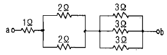
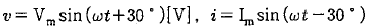
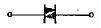
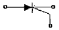
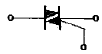
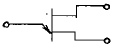

전기기능사 (2011-02-13 기출문제)
1과목: 전기 이론
1. 동일한 용량의 콘덴서 5개를 병렬로 접속하였을 때의 합성 용량을 Cp라고 하고, 5개를 직렬로 접속하였을 때의 합성 용량을 Cs라고 할 때 Cp와 Cs의 관계는?
- Cp = 5Cs
- Cp = 10Cs
- Cp = 25Cs
- Cp = 50Cs
(정답률: 76%)

2. 전류에 의한 자계의 세기와 관계가 있는 법칙은?
- 옴의 법칙
- 렌츠의 법칙
- 키르히호프의 법칙
- 비오-사바르의 법칙
(정답률: 72%)
3. 어떤 3상 회로에서 선간 전압이 200V, 선전류 25A, 3상 전력이 7 kW 였다. 이때의 역률은?(오류 신고가 접수된 문제입니다. 반드시 정답과 해설을 확인하시기 바랍니다.)
- 약 60[%]
- 약 70[%]
- 약 80[%]
- 약 90[%]
(정답률: 90%)
4. 교류 기기나 교류 전원의 용량을 나타낼 때 사용되는 것과 그 단위가 바르게 나열된 것은?
- 유효전력 - [VAh]
- 무효전력 - [W]
- 피상전력 - [VA]
- 최대전력 - [Wh]
(정답률: 76%)
5. 부하의 전압과 전류를 측정하기 위한 전압계와 전류계의 접속방법으로 옳은 것은?
- 전압계 : 직렬, 전류계 : 병렬
- 전압계 : 직렬, 전류계 : 직렬
- 전압계 : 병렬, 전류계 : 직렬
- 전압계 : 병렬, 전류계 : 병렬
(정답률: 65%)
6. 어떤 콘덴서에 1000V의 전압을 가하였더니 5×10-3C의 전하가 축적되었다. 이 콘덴서의 용량은?
- 2.5[㎌]
- 5[㎌]
- 250[㎌]
- 5000[㎌]
(정답률: 63%)
7. 다음 회로에서 a, b 간의 합성 저항은?

- 1[Ω]
- 2[Ω]
- 3[Ω]
- 4[Ω]
(정답률: 75%)
8.

[A]일때 전압을 기준으로 할 때 전류의 위상차는?- 60° 뒤진다.
- 60° 앞선다.
- 30° 뒤진다.
- 30° 앞선다.
(정답률: 56%)
9. 자체 인덕턴스 0.1H의 코일에 5A의 전류가 흐르고 있다. 축적되는 전자 에너지는?
- 0.25[J]
- 0.5[J]
- 1.25[J]
- 2.5[J]
(정답률: 50%)
10. 니켈의 원자가는 2.0이고 원자량은 58.70 이다. 이 때 화학 당량의 값은?
- 117.4
- 60.70
- 56.70
- 29.35
(정답률: 60%)
11. 3분동안에 180000[J]의 일을 하였다면 전력은?
- 1[kW]
- 30[kW]
- 1000[kW]
- 3240[kW]
(정답률: 55%)
12. 서로 다른 종류의 안티온과 비스무트의 두 금속을 접속하여 여기에 전류를 통하면, 그 접점에서 열의 발생 또는 흡수가 일어난다. 줄열과 달리 전류의 방향에 따라 열의 흡수와 발생이 다르게 나타나는 이 현상은?
- 펠티에효과
- 제벡효과
- 제3 금속의 법칙
- 열전효과
(정답률: 78%)
13. 권수가 200 인 코일에서 0.1초 사이에 0.4Wb의 자속이 변화한다면, 코일에 발생되는 기전력은?
- 8[V]
- 200[V]
- 800[V]
- 2000[V]
(정답률: 58%)
14. 1[Ωㆍm]와 같은 것은?
- 1[μΩㆍ㎝]
- 106[Ωㆍmm2/m]
- 102[Ωㆍ㎜]
- 104[Ωㆍ㎝]
(정답률: 72%)
15. 전압 220V, 전류 10A, 역률 0.8인 3상 전동기 사용시 소비전력은?
- 약 1.5[kW]
- 약 3.0[kW]
- 약 2.5[kW]
- 약 7.1[kW]
(정답률: 51%)
16. 평균 반지름 10㎝이고 감은 횟수 10회의 원형코일에 20A의 전류를 흐르게 하면 코일 중심의 자기장의 세기는?
- 10[AT/m]
- 20[AT/m]
- 1000[AT/m]
- 2000[AT/m]
(정답률: 49%)
17. R-L-C 직렬공진 회로에서 최소가 되는 것은?
- 저항 값
- 임피던스 값
- 전류 값
- 전압 값
(정답률: 68%)
18. 기본파의 3%인 제3고조파와 4%인 제5고조파, 1%인 제7고조파를 포함하는 전압파의 왜율은?
- 약 2.7[%]
- 약 5.1[%]
- 약 7.7[%]
- 약 14.1[%]
(정답률: 44%)
19. 진성 반도체의 4가의 실리콘에 N형 반도체를 만들기 위하여 첨가하는 것은?
- 게르마늄
- 갈륨
- 인듐
- 안티몬
(정답률: 65%)
20. 자기 인덕턴스에 축적되는 에너지에 대한 설명으로 가장 옳은 것은?
- 자기 인덕턴스 및 전류에 비례한다.
- 자기 인덕턴스 및 전류에 반비례한다.
- 자기 인덕턴스에 비례하고 전류의 제곱에 비례한다.
- 자기 인덕턴스에 반비례하고 전류의 제곱에 반비례한다.
(정답률: 64%)
2과목: 전기 기기
21. 접지사고 발생시 다른 선로의 전압을 상전압 이상으로 되지 않으며, 이상전압의 위험도 없고 선로나 변압기의 절연 레벨을 저감시킬 수 있는 접지 방식은?
- 저항 접지
- 비 접지
- 직접 접지
- 소호 리액터 접지
(정답률: 46%)
22. 유도 전동기에서 원선도 작성시 필요하지 않은 시험은?
- 무부하 시험
- 구속 시험
- 저항 측정
- 슬립 측정
(정답률: 53%)
23. 기중기로 100[t]의 하중을 2[m/min]의 속도로 권상할 때 소요되는 전동기의 용량은?(단, 기계 효율은 70%이다.)
- 약 47[kW]
- 약 94[kW]
- 약 143[kW]
- 약 286[kW]
(정답률: 26%)
24. 3상 전원에서 2상 전원을 얻기 위한 변압기의 결선 방법은?
- △
- Y
- V
- T
(정답률: 47%)
25. 직류분권 전동기의 계자 전류를 약하게 하면 회전수는?
- 감소한다.
- 정지한다.
- 증가한다.
- 변화 없다.
(정답률: 50%)
26. 3상 권선형 유도 전동기의 기동시 2차축에 저항을 접속하는 이유는?
- 기동 토크를 크게 하기 위해
- 회전수를 감소시키기 위해
- 기동 전류를 크게 하기 위해
- 역률을 개선하기 위해
(정답률: 43%)
27. 정속도 전동기로 공작기계 등에 주로 사용되는 전동기는?
- 직류 분권 전동기
- 직류 직권 전동기
- 직류 차동 복권 전동기
- 단상 유도 전동기
(정답률: 90%)
28. 동기 발전기의 병렬운전 중에 기전력의 위상차가 생기면?
- 위상이 일치하는 경우보다 출력이 감소한다.
- 부하 분담이 변한다.
- 무효 순환전류가 흘러 전기자 권선이 과열된다.
- 동기화력이 생겨 두 기전력의 위상이 동상이 되도록 작용한다.
(정답률: 51%)
29. 다음 설명 중 틀린 것은?
- 3상 유도 전압조정기의 회전자 권선은 분로 권선이고, Y결선으로 되어 있다.
- 디이프 슬롯형 전동기는 냉각 효과가 좋아 기동 정지가 빈번한 중.대형 저속기에 적당하다.
- 누설 변압기가 네온사인이나 용접기의 전원으로 알맞은 이유는 수하특성 때문이다.
- 계기용 변압기의 2차 표준은 110/220[V]로 되어 있다.
(정답률: 57%)
30. 동기 전동기에 대한 설명으로 틀린 것은?
- 정속도 전동기 이고, 저속도에서 특히 효율이 좋다.
- 역률을 조정할 수 있다.
- 난조가 일어나기 쉽다.
- 직류 여자기가 필요하지 않다.
(정답률: 53%)
31. 직류발전기의 철심을 규소 강판으로 성층하여 사용하는 주된 이유는?
- 브러시에서의 불꽃방지 및 정류개선
- 맴돌이 전류손과 히스테리시스손의 감소
- 전기자 반작용의 감소
- 기계적 강도 개선
(정답률: 79%)
32. 권수비 2, 2차 전압 100V, 2차 전류 5A, 2차 임피던스 20Ω인 변압기의 (ㄱ)1차 환산 전압 및 (ㄴ)1차 환산 임피던스는?
- (ㄱ) 200[V], (ㄴ) 80[Ω]
- (ㄱ) 200[V], (ㄴ) 40[Ω]
- (ㄱ) 50[V], (ㄴ) 10[Ω]
- (ㄱ) 50[V], (ㄴ) 5[Ω]
(정답률: 42%)
33. 3상 유도전동기의 회전방향을 바꾸기 위한 방법은?
- 3상의 3선 접속을 모두 바꾼다.
- 3상의 3선 중 2선의 접속을 바꾼다.
- 3상의 3선 중 1선에 리액턴스를 연결한다.
- 3상의 3선 중 2선에 같은 리액턴스를 연결한다.
(정답률: 74%)
34. 계자 철심에 전류자기가 없어도 발전되는 직류기는?
- 분권기
- 직권기
- 복권기
- 타여자기
(정답률: 75%)
35. 양 방향으로 전류를 흘릴 수 있는 양방향 소자는?
- SCR
- GTO
- TRIAC
- MOSFET
(정답률: 63%)
36. 3상 제어 정류 회로에서 점호각의 최대값은?
- 30[°]
- 150[°]
- 180[°]
- 210[°]
(정답률: 37%)
37. 주파수 60Hz의 회로에 접속되어 슬립 3%, 회전수 1164rpm으로 회전하고 있는 유도 전동기의 극수는?
- 5극
- 6극
- 7극
- 10극
(정답률: 74%)
38. 유도 전동기의 2차에 있어 E2가 127V, r2가 0.03Ω, x2가 0.⑤Ω, s가 5%로 운전하고 있다. 이 전동기의 2차 전류 I2는?(단, s는 슬립, x2는 2차 권선 1상의 누설리액턴스, r2는 2차 권선 1상의 저항, E2는 2차 권선 1상의 유기 기전력 이다.)
- 약 201[A]
- 약 211[A]
- 약 221[A]
- 약 231[A]
(정답률: 45%)
39. 트라이악[TRIAC]의 기호는?




(정답률: 71%)
40. 스위칭 주기 10[μs],온(ON)시간 5[μs]일 때 강압형 초퍼의 출력 전압 E2와 입력 전압 E1의 관계는?
- E2= 3E1
- E2= 2E1
- E2= E1
- E2= 0.5E1
(정답률: 41%)
3과목: 전기 설비
41. 일반적으로 분기회로의 개폐기 및 과전류 차단기는 전압옥내간선과의 분기시점에 전선의 길이가 몇[m] 이하의 곳에 시설하여야 하는가?
- 3[m]
- 4[m]
- 5[m]
- 8[m]
(정답률: 53%)
42. 가공전선의 지지물에 송탑 또는 승각용으로 사용하는 발판 볼트 등은 지표상 몇 [m]미만에 설치하여서는 안되는가?
- 1.2[m]
- 1.5[m]
- 1.6[m]
- 1.8[m]
(정답률: 60%)
43. 전선과 기구단자 접속시 누름나사를 덜 죌 때 발생할 수 있는 현상과 거리가 먼 것은?
- 과열
- 화재
- 절전
- 전파잡음
(정답률: 61%)
44. 나전선 상호를 접속하는 경우 일반적으로 전선의 세기를 몇 [%]이상 감소시키지 아니하여야 하는가?
- 2[%]
- 3[%]
- 20[%]
- 80[%]
(정답률: 74%)
45. 전동기에 공급하는 간선의 굵기는 그 간선에 접속하는 전동기의 정격전류의 합계가 50A를 초과하는 경우 그 정격전류 합계의 몇 배 이상의 허용전류를 갖는 전선을 사용하여야 하는가?(오류 신고가 접수된 문제입니다. 반드시 정답과 해설을 확인하시기 바랍니다.)
- 1.1배
- 1.25배
- 1.3배
- 2배
(정답률: 58%)
46. 제1종 접지공사의 접지선의 굵기로 알맞은 것은?(단, 공칭단면적으로 나타내며, 연동선의 경우이다)(관련 규정 개정전 문제로 여기서는 기존 정답인 3번을 누르면 정답 처리됩니다. 자세한 내용은 해설을 참고하세요.)
- 0.75mm2 이상
- 2.5mm2 이상
- 6mm2 이상
- 16mm2 이상
(정답률: 55%)
47. 저압 연접 인입선의 시설과 관련된 설명으로 틀린 것은?
- 옥내를 통과하지 아니할 것
- 전선의 굵기는 1.5mm2 이하 일 것
- 폭 5m를 넘는 도로를 횡단하지 아니할 것
- 인입선에서 분기하는 점으로부터 100m를 넘는 지역에 미치지 아니할 것
(정답률: 63%)
48. 금속관공사에서 금속관을 콘크리트에 매설할 경우 관의 두께는 몇 [㎜]이상의 것이어야 하는가?
- 0.8[㎜]
- 1.0[㎜]
- 1.2[㎜]
- 1.5[㎜]
(정답률: 67%)
49. 절연 전선으로 가선된 배전 선로에서 활선 상태인 경우 전선의 피복을 벗기는 것은 매우 곤란한 작업이다. 이런 경우 활선 상태에서 전선의 피복을 벗기는 공구는?
- 전선 피박기
- 애자커버
- 와이어 통
- 데드엔드 커버
(정답률: 79%)
50. 금속제 케이블트레이의 종류가 아닌 것은?
- 통풍채널형
- 사다리형
- 바닥밀폐형
- 크로스형
(정답률: 52%)
51. 전선로의 직선부분을 지지하는 애자는?
- 핀애자
- 지지애자
- 가지애자
- 구형애자
(정답률: 46%)
52. 저압옥외조명시설에 전기를 공급하는 가공전선 또는 이중 전선에서 분기하여 전등 또는 개폐기에 이르는 배선에 사용하는 절연전선의 단면적은 몇 [mm2]이상 이어야 하는가?
- 2.0[mm2]
- 2.5[mm2]
- 6[mm2]
- 16[mm2]
(정답률: 48%)
53. 사람이 접촉될 우려가 있는 것으로서 가요전선관을 새들 등으로 지지하는 경우 지지점감의 거리는 얼마 이하이어야 하는가?
- 0.3[m] 이하
- 0.5[m] 이하
- 1[m] 이하
- 1.5[m] 이하
(정답률: 46%)
54. 녹아웃 펀치와 같은 용도로 배전반이나 분전반 등에 구멍을 뚫을 때 사용하는 것은?
- 클리퍼(Cliper)
- 홀 소(hole saw)
- 프레스 툴(pressure tool)
- 드라이브이트 툴(driveit tool)
(정답률: 72%)
55. 흥행장의 무대용 콘센트, 박스, 플라이 덕트 및 보더 라이트의 금속제 외함은 몇 중 접지공사를 하여야 하는가?(관련 규정 개정전 문제로 여기서는 기존 정답인 3번을 누르면 정답 처리됩니다. 자세한 내용은 해설을 참고하세요.)
- 제1종
- 제2종
- 제3종
- 특별 제3종
(정답률: 70%)
56. 콘크리트 직매용 케이블 배선에서 일반적으로 케이블을 구부릴 때 피복이 손상되지 않도록 그 굴곡부 안쪽의 반경은 케이블 외경의 몇 배 이상으로 하여야 하는가?(단, 단심이 아닌 경우이다.)
- 2배
- 3배
- 6배
- 12배
(정답률: 73%)
57. 조명용 백열전등을 호텔 또는 여관 객실의 입구에 설치 할 때나 일반 주택 및 아파트 각 실의 현관에 설치할 때 사용되는 스위치는?
- 타임스위치
- 누름버튼스위치
- 토글스위치
- 로터리스위치
(정답률: 73%)
58. 소맥분, 전분 기타 가연성의 분진이 존재하는 곳의 저압 옥내 배선 공사 방법 중 적당하지 않은 것은?
- 애자 사용 공사
- 합성수지관 공사
- 케이블 공사
- 금속관 공사
(정답률: 73%)
59. 절연전선을 동일 플로어덕트 내에 넣을 경우 플로어덕트 크기는 전선의 피복절연물을 포함한 단면적의 총합계가 플로어덕트 내 단면적의 몇 [%]이하가 되도록 선정하여야 하는가?
- 12[%]
- 22[%]
- 32[%]
- 42[%]
(정답률: 59%)
60. 전압의 구분에서 고압에 대한 설명으로 가장 옳은 것은?(관련 규정 개정전 문제로 여기서는 기존 정답인 3번을 누르면 정답 처리됩니다. 자세한 내용은 해설을 참고하세요.)
- 직류는 750V를, 교류는 600V 이하인 것
- 직류는 750V를, 교류는 600V 이상인 것
- 직류는 750V를, 교류는 600V를 초과하고, 7kV 이하인 것
- 7kV를 초과하는 것
(정답률: 74%)
직렬 접속은 각 콘덴서의 역수의 합의 역수가 합성 용량이므로 1/Cs = 1/C + 1/C + 1/C + 1/C + 1/C = 5/C
따라서 Cs = C/5
Cp/Cs = (5C)/(C/5) = 25
따라서 Cp = 25Cs